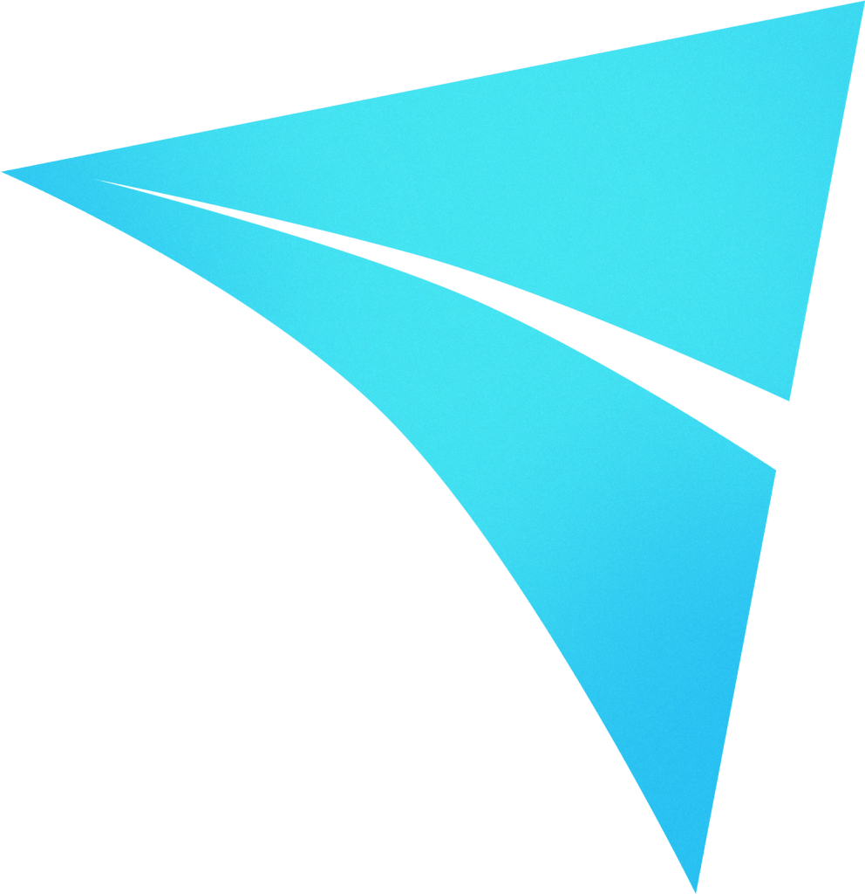

Masdr, Mudad PMS
I'm currently working on Mudad PMS, a comprehensive Payroll Management System with various integrations with banks, financing providers, goverment entities (GOSI), and a good number of HR systems. As a Full Stack Developer, I use Angular for frontend and Spring Boot for backend. PMS was the first project I worked on that actually follows Agile will all its practices, not just saying they do.
I alternated between Sprint Member and Production Member roles, which rapidly enhanced my understanding of the entire system, including its legacy components. As a Production Member, I worked on hotfixes that helped me identify weak points in user experience and business logic, particularly in legacy parts of the system.
Rawi
Rawi started as an idea at the Saudi ChatGPT Hackathon, where our basic version won second place and a 150,000 SAR prize. It's a kids app that creates short stories and AI pictures based on the child's interests. I worked as the Technical Lead of the project, developing Rawi with React Native with Expo, and Firebase as our backend.
Although the work on Rawi is 90% done, unfortunately we couldn't find a profitable business model, as most good AI models are pretty expensive right now, and cheaper or open source models do not generate great results. Who knows, we might get back to working on this when AI become cheaper.
Emkan
At Emkan, I worked on a variety of projects as a Full Stack Developer, in a startup-like environment. Over about a year and a half, I worked on more than 6 different projects, mainly using Spring Boot for backend development and React with React Native for frontend and mobile development. My role covered various aspects of Emkan's fintech solutions, from loan management and autoleasing systems, as well as internal tools. This diverse mix of projects let me expand my skills, picking up new technologies along the way.
What made Emkan interesting to work in was how often I switched between projects. It kept things fresh and challenging, helping me build a broad skill set quickly. This constant change of pace really taught me how to adapt and enhanced my ability to learn quickly.
Odel

I started my career at Odel, a startup of about 12 people at the time, primarily as a Business Analyst, but in reality, in a startup you never work just one job. I worked in a variety of tasks, some purely as a Business Analyst, others as a Developer working on internal automation tools with Python and Tkinter that helped us skip routine/repetitive tasks, later on, I started working on UI tools with React and Electron instead. One task that I particularly enjoyed was when we got an Excel sheet of 100k complaints and inquiries, only 20% of which were categorized, and I had to categorize the rest. Using Python and Jupyter, I looked for common words in each entry, and each cluster of common words programmatically defined a new category.
Working at Odel was enriching in so many levels, it developed my way of thinking about problems and how to analyse them. Even when working 12-hour days, it felt like I worked on things that mattered, and getting the appreciation I felt I deserved. Working at a startup as a first job might be one of the best things you could do to your career.